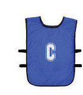
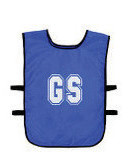
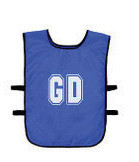
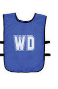
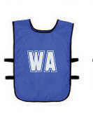
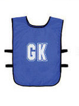
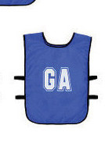

Figure 1.5: Player bibs
Precautionary measures in netball
To ensure safe play in netball, players must take precautions to protect themselves and others from injuries such as dislocations, fractures, or wounds. Since netball involves quick movements, jumping, and sudden stops, it is important to observe the following safety measures before, during, and after the game:
Before playing:
Warm-up: Engage in stretching and light exercises to prepare muscles, reduce the risk of injury and improve performance;
First aid kit: Ensure that a first aid kit is available at the playing area in case of emergencies;
Inspect the playing area and the equipment: Inspect the netballs pressure and quality, remove any debris, wet spots, or unsafe objects from the court; and
Wear proper gear: Use appropriate netball shoes, uniforms, and protective gear if necessary.
During play:
Observe the rules: Adhere to netball rules to avoid fouls and ensure fair play;
Communicate with teammates: Prevent collisions by using verbal and non-verbal signals;
Be aware of your movements: Avoid sudden stops or dangerous landings that may cause injury; and